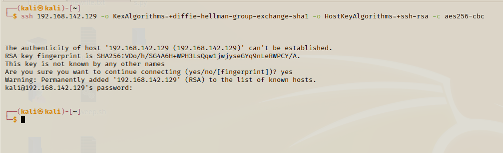

From Discord:
ssh <IP> -o KexAlgorithms=+diffie-hellman-group-exchange-sha1 -o HostKeyAlgorithms=+ssh-rsa -c aes256-cbc
command : ssh 192.168.142.129 -o KexAlgorithms=+diffie-hellman-group-exchange-sha1 -o HostKeyAlgorithms=+ssh-rsa -c aes256-cbc

Why did we even do this to make an attempt to a connection ?
- Only to see if there's a banner exposed which will say we are running
ssh version xyz
built by this person/company etc
but not able to find any here.